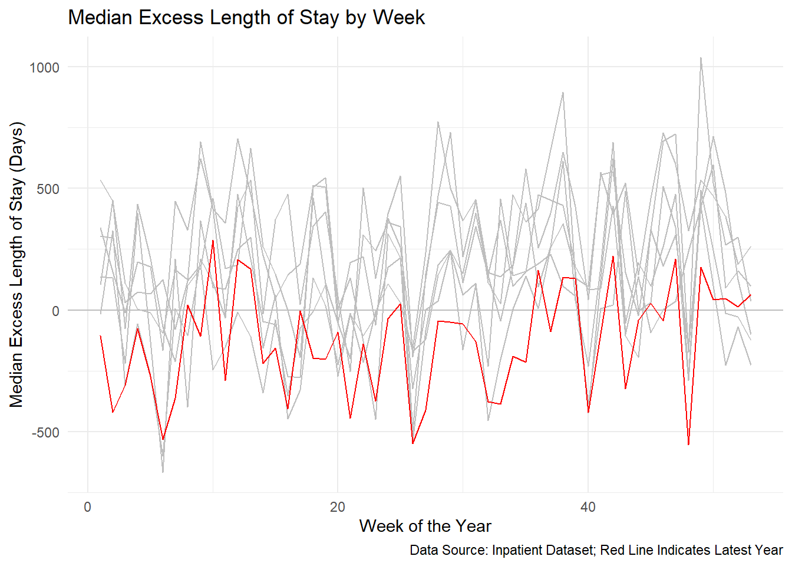
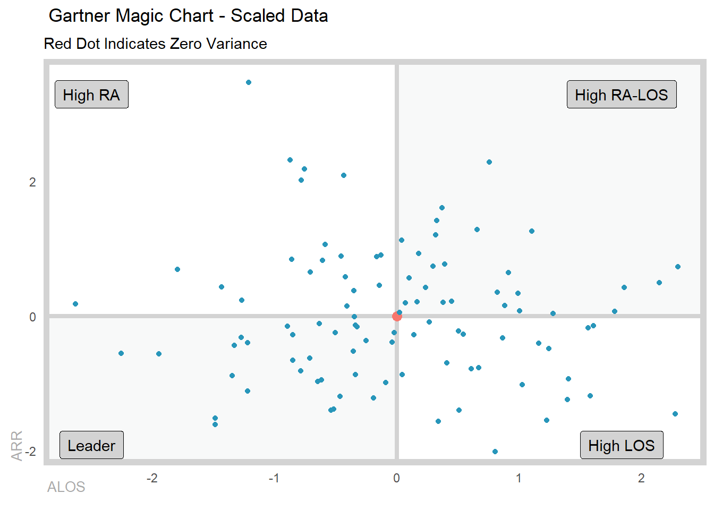
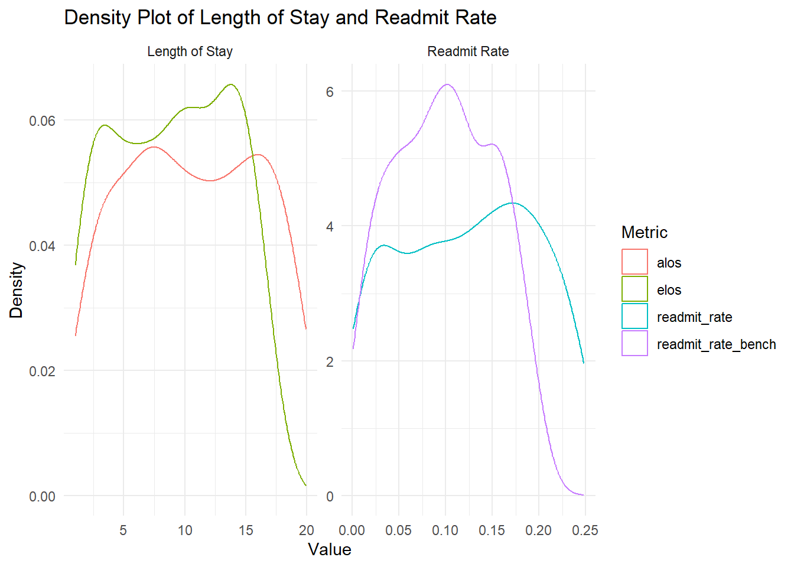
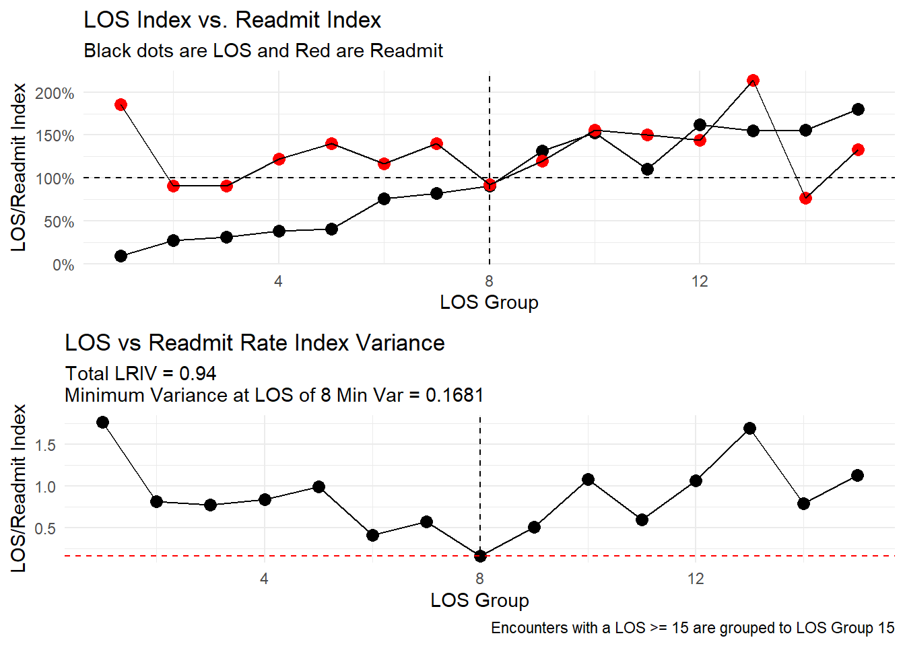

# install.packages(healthyR.data)
library(healthyR)
library(healthyR.data)
library(tidyverse)
library(DT)Introduction
This article will introduce you to the healthyR package. healthyR is a package that provides functions for analyzing and visualizing health-related data. It is designed to make it easier for health professionals and researchers to work with health data in R. It is an experimental package that is still under active development, so some functions may change in the future along with the package structure and scope.
Unfortunately, the package needs some love and attention. Which I am trying to give it. Given that information, I will be updating the package to include more functions and improve the existing ones. I will also be updating the documentation and adding more examples to help users get started with the package.
So let’s get started!
Installation
You can easily install the healthyR package from CRAN or GitHub if you want to live in dev land.
install.packages("healthyR")Or alternatively:
# install.packages("devtools")
devtools::install_github("spsanderson/healthyR")Getting Started
The Goal
The ultimate goal really of this package is to provide a set of functions that are easy to understand and follow. The functions should be able to take in data, process it, and output results in a way that is easy to understand and interpret. The package should also provide functions for visualizing the data in a way that is easy to understand and interpret. In healthycare, at least in my experience there are a great many small rural hospitals that do not have the resources to hire a data scientist or a statistician. This package and in fact the entire healthyverse suite are being designed to help those hospitals and other health organizations that may not have the resources to hire a data scientist or statistician.
The only way anyone can improve is if they have their data and can then in turn analyze and interpret that data. This package is designed to help with that in some short way for now.
Let’s go through some examples. To do this we will also load in my healthyR.data package as it comes with a standard dataset that we can use to demonstrate the functions in healthyR and a host of other issues.
Now let’s get a list of all of the functions that are exposed via the healthyR package.
# Functions and their arguments for healthyR
pat <- c("%>%",":=","as_label","as_name","enquo","enquos","expr",
"dx_cc_mapping","px_cc_mapping","sym","syms")
tibble(fns = ls.str("package:healthyR")) |>
filter(!fns %in% pat) |>
mutate(params = purrr::map(fns, formalArgs)) |>
group_by(fns) |>
mutate(func_with_params = toString(params)) |>
mutate(
func_with_params = ifelse(
str_detect(
func_with_params, "\\("),
paste0(fns, func_with_params),
paste0(fns, "(", func_with_params, ")")
)) |>
select(fns, func_with_params) |>
mutate(fns = as.factor(fns)) |>
datatable(
#class = 'cell-boarder-stripe',
colnames = c("Function", "Full Call"),
options = list(
autowidth = TRUE,
pageLength = 10
)
)You can see the reference page for all of the available functions here: healthyR Reference
Let’s get started with a first example.
Examples
Example 1: Median Excess Lenght of Stay
In this example, we will calculate the median excess length of stay for patients in the inpatient dataset. The excess length of stay is the difference between the actual length of stay and the expected length of stay for a patient. The expected length of stay is calculated based on the patient’s diagnosis-related group (DRG) and other factors.
For providers and hospitals, the excess length of stay is an important metric because it can help identify patients who are at risk of complications or other adverse outcomes. By identifying these patients early, providers can take steps to prevent complications and improve patient outcomes. Afterall, hospitals are full of sick people, as hard as they work to keep environments sterile one must remember that when your at your worst, you go to a hospital, so it is natural that complications can arise.
# Load the inpatient dataset
df <- healthyR_data |>
filter(ip_op_flag == "I") |>
select(visit_id, visit_end_date_time, length_of_stay) |>
mutate(visit_end_date = as.Date(
visit_end_date_time, format = "%Y-%m-%d"
)) |>
select(-visit_end_date_time, visit_id, visit_end_date, length_of_stay) |>
filter(visit_end_date >= "2012-01-01",
visit_end_date < "2020-01-01") |>
arrange(visit_end_date)
glimpse(df)Rows: 105,577
Columns: 3
$ visit_id <chr> "1283065398", "1171004549", "1331016562", "1970894633",…
$ length_of_stay <dbl> 6, 1, 3, 2, 3, 5, 21, 4, 2, 4, 1, 9, 1, 2, 2, 1, 9, 1, …
$ visit_end_date <date> 2012-01-01, 2012-01-01, 2012-01-01, 2012-01-01, 2012-0…Now let’s use the ts_alos_plt() function to see what the average length of stay (ALOS) looks like:
ts_alos_plt(
df,
.date_col = visit_end_date,
.value_col = length_of_stay,
.by_grouping = "month",
.interactive = TRUE
)From here, we see that the alos is increasing over time. So, is this a bad sign? This could be due to a number of factors, such as an increase in the number of patients with complex conditions or an increase in the number of patients with complications. It could also be due to a lack of resources or staff, which can lead to delays in care and longer lengths of stay.
This is why we want to see the median excess length of stay. Let’s calculate that now.
df_tbl <- ts_signature_tbl(df, .date_col = visit_end_date)pad applied on the interval: dayglimpse(df_tbl)Rows: 105,577
Columns: 31
$ visit_id <chr> "1283065398", "1171004549", "1331016562", "1970894633",…
$ length_of_stay <dbl> 6, 1, 3, 2, 3, 5, 21, 4, 2, 4, 1, 9, 1, 2, 2, 1, 9, 1, …
$ visit_end_date <date> 2012-01-01, 2012-01-01, 2012-01-01, 2012-01-01, 2012-0…
$ index.num <dbl> 1325376000, 1325376000, 1325376000, 1325376000, 1325376…
$ diff <dbl> NA, 0, 0, 0, 0, 0, 0, 0, 0, 0, 0, 0, 0, 0, 0, 0, 86400,…
$ year <int> 2012, 2012, 2012, 2012, 2012, 2012, 2012, 2012, 2012, 2…
$ year.iso <int> 2011, 2011, 2011, 2011, 2011, 2011, 2011, 2011, 2011, 2…
$ half <int> 1, 1, 1, 1, 1, 1, 1, 1, 1, 1, 1, 1, 1, 1, 1, 1, 1, 1, 1…
$ quarter <int> 1, 1, 1, 1, 1, 1, 1, 1, 1, 1, 1, 1, 1, 1, 1, 1, 1, 1, 1…
$ month <int> 1, 1, 1, 1, 1, 1, 1, 1, 1, 1, 1, 1, 1, 1, 1, 1, 1, 1, 1…
$ month.xts <int> 0, 0, 0, 0, 0, 0, 0, 0, 0, 0, 0, 0, 0, 0, 0, 0, 0, 0, 0…
$ month.lbl <ord> January, January, January, January, January, January, J…
$ day <int> 1, 1, 1, 1, 1, 1, 1, 1, 1, 1, 1, 1, 1, 1, 1, 1, 2, 2, 2…
$ hour <int> 0, 0, 0, 0, 0, 0, 0, 0, 0, 0, 0, 0, 0, 0, 0, 0, 0, 0, 0…
$ minute <int> 0, 0, 0, 0, 0, 0, 0, 0, 0, 0, 0, 0, 0, 0, 0, 0, 0, 0, 0…
$ second <int> 0, 0, 0, 0, 0, 0, 0, 0, 0, 0, 0, 0, 0, 0, 0, 0, 0, 0, 0…
$ hour12 <int> 0, 0, 0, 0, 0, 0, 0, 0, 0, 0, 0, 0, 0, 0, 0, 0, 0, 0, 0…
$ am.pm <int> 1, 1, 1, 1, 1, 1, 1, 1, 1, 1, 1, 1, 1, 1, 1, 1, 1, 1, 1…
$ wday <int> 1, 1, 1, 1, 1, 1, 1, 1, 1, 1, 1, 1, 1, 1, 1, 1, 2, 2, 2…
$ wday.xts <int> 0, 0, 0, 0, 0, 0, 0, 0, 0, 0, 0, 0, 0, 0, 0, 0, 1, 1, 1…
$ wday.lbl <ord> Sunday, Sunday, Sunday, Sunday, Sunday, Sunday, Sunday,…
$ mday <int> 1, 1, 1, 1, 1, 1, 1, 1, 1, 1, 1, 1, 1, 1, 1, 1, 2, 2, 2…
$ qday <int> 1, 1, 1, 1, 1, 1, 1, 1, 1, 1, 1, 1, 1, 1, 1, 1, 2, 2, 2…
$ yday <int> 1, 1, 1, 1, 1, 1, 1, 1, 1, 1, 1, 1, 1, 1, 1, 1, 2, 2, 2…
$ mweek <int> 5, 5, 5, 5, 5, 5, 5, 5, 5, 5, 5, 5, 5, 5, 5, 5, 1, 1, 1…
$ week <int> 1, 1, 1, 1, 1, 1, 1, 1, 1, 1, 1, 1, 1, 1, 1, 1, 1, 1, 1…
$ week.iso <int> 52, 52, 52, 52, 52, 52, 52, 52, 52, 52, 52, 52, 52, 52,…
$ week2 <int> 1, 1, 1, 1, 1, 1, 1, 1, 1, 1, 1, 1, 1, 1, 1, 1, 1, 1, 1…
$ week3 <int> 1, 1, 1, 1, 1, 1, 1, 1, 1, 1, 1, 1, 1, 1, 1, 1, 1, 1, 1…
$ week4 <int> 1, 1, 1, 1, 1, 1, 1, 1, 1, 1, 1, 1, 1, 1, 1, 1, 1, 1, 1…
$ mday7 <int> 1, 1, 1, 1, 1, 1, 1, 1, 1, 1, 1, 1, 1, 1, 1, 1, 1, 1, 1…names(df_tbl) [1] "visit_id" "length_of_stay" "visit_end_date" "index.num"
[5] "diff" "year" "year.iso" "half"
[9] "quarter" "month" "month.xts" "month.lbl"
[13] "day" "hour" "minute" "second"
[17] "hour12" "am.pm" "wday" "wday.xts"
[21] "wday.lbl" "mday" "qday" "yday"
[25] "mweek" "week" "week.iso" "week2"
[29] "week3" "week4" "mday7" Now that we have our table ready for calculation, let’s get it done!
ts_median_excess_plt(
.data = df_tbl,
.date_col = visit_end_date,
.value_col = length_of_stay,
.x_axis = week,
.ggplot_group_var = year,
.years_back = 1
) +
labs(
x = "Week of the Year",
y = "Median Excess Length of Stay (Days)",
title = "Median Excess Length of Stay by Week",
caption = "Data Source: Inpatient Dataset; Red Line Indicates Latest Year"
)
So we can see from here that even though the ALOS is increasing, the median excess length of stay is decreasing. This is a good sign as it indicates that the hospital is improving its efficiency and reducing the number of patients who are staying longer than expected.
Let’s move onto another example.
Example 2: Gartner Magic Chart
In this example, we will create a Gartner Magic Chart to visualize the performance of different hospitals in terms of their length of stay and readmission rates. The Gartner Magic Chart is a popular tool used by healthcare organizations to compare the performance of different hospitals and identify areas for improvement.
We will create a simulated dataset of 100 hospitals to achieve this and we will want it scaled, think of this like taking a look at the performance of the excess alos and excess readmit rates:
set.seed(123)
gartner_tbl <- tibble(
hospital_id = 1:100,
x = scale(rnorm(100, mean = 5, sd = 2)),
y = scale(rnorm(100, mean = 0.1, sd = 0.05))
)
summary(gartner_tbl[,-1]) x.V1 y.V1
Min. :-2.6287610 Min. :-2.012128
1st Qu.:-0.6400635 1st Qu.:-0.717236
Median :-0.0313860 Median :-0.122321
Mean : 0.0000000 Mean : 0.000000
3rd Qu.: 0.6588549 3rd Qu.: 0.595034
Max. : 2.2972071 Max. : 3.462909 Now that we have our simulated dataset, let’s create the Gartner Magic Chart. Unfortunately at this point the columns must be named x and y, but this will be updated in the future to pass whatever column you like.
gartner_magic_chart_plt(
.data = gartner_tbl,
.x_col = x,
.y_col = y,
.x_lab = "ALOS",
.y_lab = "ARR",
.point_size = NULL,
.plt_title = "Gartner Magic Chart - Scaled Data",
.tr_lbl = "High RA-LOS",
.tl_lbl = "High RA",
.bl_lbl = "Leader",
.br_lbl = "High LOS"
)
Example 3: Length Of Stay and Readmit Index with Variance
Sometimes we want to see how the variance of the length of stay and readmission rates are changing over the length of stay of a patient visit. This can help us identify trends and patterns that may be affecting the performance of hospitals. What this means is that maybe we would rather have a longer length stay (a variance, longer than expected) if it helps to keep the reamission rate down. A provider/hospital would rather have someone in the hospital longer than see them get readmitted because they were discharged prematurely.
Let’s make our data:
data_tbl <- tibble(
"alos" = runif(186, 1, 20)
, "elos" = runif(186, 1, 17)
, "readmit_rate" = runif(186, 0, .25)
, "readmit_rate_bench" = runif(186, 0, .2)
)
summary(data_tbl) alos elos readmit_rate readmit_rate_bench
Min. : 1.009 Min. : 1.019 Min. :0.0009741 Min. :0.00140
1st Qu.: 6.224 1st Qu.: 4.785 1st Qu.:0.0647280 1st Qu.:0.05446
Median :10.518 Median : 9.277 Median :0.1273747 Median :0.09597
Mean :10.553 Mean : 8.979 Mean :0.1230823 Mean :0.09830
3rd Qu.:15.349 3rd Qu.:13.094 3rd Qu.:0.1853718 3rd Qu.:0.14387
Max. :19.936 Max. :16.919 Max. :0.2479363 Max. :0.19852 Let’s take a look at the data quickly:
data_tbl |>
pivot_longer(
cols = c(alos, elos, readmit_rate, readmit_rate_bench),
names_to = "metric", values_to = "value"
) |>
mutate(metric_group = ifelse(
metric %in% c("alos", "elos"), "Length of Stay", "Readmit Rate"
)
) |>
ggplot(aes(x = value, color = metric)) +
facet_wrap(~ metric_group, scales = "free") +
geom_density() +
theme_minimal() +
labs(
x = "Value",
y = "Density",
title = "Density Plot of Length of Stay and Readmit Rate",
color = "Metric"
)
Now let’s see how the variance of the length of stay and readmission rates are changing over the length of stay of a patient visit:
los_ra_index_summary_tbl(
.data = data_tbl
, .max_los = 15
, .alos_col = alos
, .elos_col = elos
, .readmit_rate = readmit_rate
, .readmit_bench = readmit_rate_bench
) %>%
los_ra_index_plt()
From here we can see that the variance of the length of stay and readmission rates are decreasing as the length of stay increases. This is a good sign as it indicates that the hospital is able to provide more consistent care to patients with longer stays, which may help to reduce the risk of readmission. Even though resource utilization may increase, the hospital is able to provide better care to patients with longer stays, which may help to reduce the risk of readmission in this example.
Example 4: Service Line Augmentation
In this example, we will agument a service line to a patient visit. This can help us create groups of patient visits in a manner that is more managable then say at the DX, DRG or MDC levels. This can help us identify trends and patterns that may be affecting the performance of hospitals.
Let’s see how it works:
df <- data.frame(
dx_col = "F10.10",
px_col = NA,
drg_col = "896"
)
service_line_augment(
.data = df,
.dx_col = dx_col,
.px_col = px_col,
.drg_col = drg_col
)# A tibble: 1 × 4
dx_col px_col drg_col service_line
<chr> <lgl> <chr> <chr>
1 F10.10 NA 896 alcohol_abuseWe see here that a patient discharged with a diagnosis of F10.10 and DRG 896 would be classified as a patient visit for the service line of “alcohol_abuse”. A term that is more generic then F10.10 which is “Alcohol Abuse, uncomplicated”. This can help us identify trends and patterns that may be affecting the performance of hospitals.